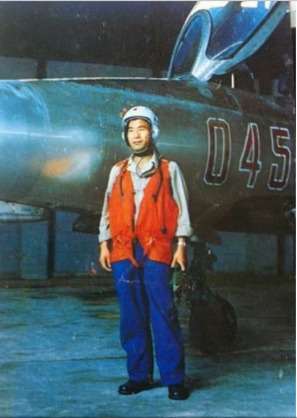

|
回目录 回主页 |

1983年8月驾驶解放军空军最新式米格21战斗机（歼七）投奔台湾的孙天勤，近日因肺炎并发症病在台湾三军总医院去世，终年80岁。台湾国防部以专案方式处理，与家属洽谈安葬五指山公墓的事宜。
1983年8月7日驾机逃到台湾的孙天勤 据报道，孙天勤是上世纪80年代投诚台湾的级别最高、驾驶的战机最先进、带走的机密最多的解放军军官，曾震惊海内外。当年46岁、为副团职副大队长的孙天勤，驾驶当时空军首架米格21战斗机，从大连起飞，降落在韩国汉城（今首尔）的空军基地。美韩在详细检查战斗机后，将战机交还中国，但掌握了米格21的机密。 而孙天勤则在台湾部署重兵的保护下，乘专机飞抵台湾，受到军政界的热烈欢迎，并被颁授上校官阶，获赠7千两黄金，时值约1.2亿新台币。孙天勤后来与投奔台湾的中国音乐家李天慧结婚。孙天勤以台湾空军总司令部情报署副组长官职退伍，一度旅居加拿大，后又返台。 孙天勤1937年出生于陕西凤翔县，56年参军，62年成为飞行员，文革时期遭停飞处分，文革快结束时恢复飞行。据悉，孙天勤谋划投奔台湾已久，应与他的父亲文革期间遭批判，他受牵连有关。 来源：美国之音 作者：海彦 |
回目录 回主页 |